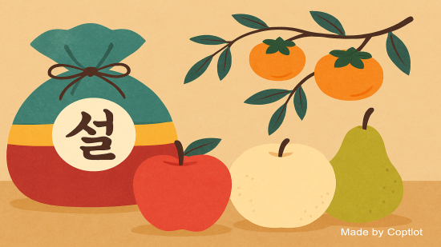

[기사 포트폴리오] 설명절, 고르기 쉽고 맛도 좋은 우리과일 3총사와 함께...

1. 들어가는 말
올해도 어김없이 설 명절이 돌아왔습니다. 여러분은 설 명절하면 무엇이 떠오르나요? 설빔 색동저고리 입은 어린아이가 졸랑거리며 내는 소리일수도 있고, 세배 후에 받은 세뱃돈 봉투와 그 속에 든 빳빳한 지폐가 복주머니 속으로 구겨 들어가며 내는 부스럭거리는 소리일 수도 있겠죠.
모두가 기억하고 있는 여러 가지 명절 풍경 소리는 아름답고 정겨웠던 추억으로 남아있을 겁니다. 그중에서도 누구에게나 기억되는 풍성한 식탁과 먹을거리는 빠질 수 없는 명절 풍경 중에 하나일 겁니다.
명절하면 떠오르는 먹을거리 하면 무엇이 있을까요? 고기류 삼총사에는 소, 돼지, 닭이 있고, 우리과일 삼총사에는 사과, 배, 감이 있습니다. 요즘에는 파인애플, 바나나, 키위 같은 외국에서 수입되는 과일도 많다지만 주변에서 쉽게 구할 수 있고 영양만점인 우리 과일을 무시할 수 없겠죠? 게다가 올해는 ‘계묘년’, ‘토끼해’이니 채식에 걸맞은 우리 과일 삼총사 사과, 배, 감에 대한 이야기를 해 보도록 하겠습니다.
2. 명절에 먹을 과일 보지 않고도 고를 수 있어요.
맛있고 먹기 좋은 사과, 배, 감. 어떻게 고를 수 있을까요?
제수용, 선물용 과일을 고를 때 색을 보는 경우가 많습니다. 하지만 농촌진흥청에서 안내한 과일 고르는 법을 참고하면 시각이 아닌 다른 감각을 이용해서도 좋은 과일을 고를 수 있습니다.
사과는 전체적으로 고르게 색이 든 것을 추천하지만, 색을 볼 수 없다면 만져봤을 때 묵직한 느낌이 들고 단단하며 향이 강하지 않고 은은한 것을 고르면 된답니다.
배는 어떨까요? 전체적인 모양이 잘 잡혀있고 상처나 흠집이 없으며, 꼭지 반대편 부위가 돌출되거나 미세한 균열이 없는 것을 고르면 된다고 하네요.
단감은 꼭지와 과일 사이에 틈이 없이 붙어있고 전체적으로 얼룩이 없으며, 만졌을 때 단단한 것이 신선해서 더 오래 두고 먹을 수 있다고 합니다.
3. 과일은 후식아냐?
여러분은 과일을 식사 후에 즐기는 후식으로만 알고 있나요?
과일에는 다양한 기능을 가진 영양 성분이 들어있어 건강을 챙길 수 있을 뿐만 아니라, 기름진 명절 음식의 느끼함을 잡아주기 때문에 음식재료로 사용하면 좋다고 합니다.
사과에는 비타민 씨(C)와 유기산이 많이 들어 있어 몸의 피로를 풀어주고 활력을 증진하는 효과가 있고, 또 위액 분비를 촉진해 소화ㆍ흡수를 돕고 배변기능에도 도움을 준다고 합니다. 사과는 납작 썰어 보쌈 같은 돼지고기 음식과 곁들이면 좋다고 합니다. 또 낙지 초회를 만들 때도 사과를 채 썰어 내면 더 상큼하게 즐길 수 있다고 하네요.
사과가 돼지고기와 찰떡궁합이라면, 육회 버무릴 때 으레 넣는 배는 소고기와 궁합이 좋습니다. 배에 루테올린(luteolin)이라는 성분이 풍부해 기침, 가래, 기관지염 등 호흡기 질환 예방에 탁월할 뿐만 아니라, 효소가 많이 들어 있어 소화를 돕는 작용도 하기 때문이죠. 한편 채 썬 배에 채소, 오징어, 새우를 넣고 유자 겨자소스로 버무리면 일반 잡채보다 열량이 낮은 당면없는 (중국식) 잡채를 만들 수 있다고 합니다.
예부터 우려서도 말려서도 먹었던 감에는 특히 비타민 씨(C)가 사과보다 17.5배 많아 항산화, 피로 해소, 면역력 증진에 도움이 됩니다. 게다가 비타민 에이(A)도 사과·배보다 많이 함유되어 있어 안구건조증이나 야맹증에 취약한 시각장애인에게도 도움을 줄 수 있고, 칼슘, 마그네슘, 식이섬유 등이 풍부하여 숙취 해소 등에 약리작용이 있다고 하니, 잦은 음주로 지친 애주가들은 이번 설에 건강을 위해 금주하며 한 번 챙겨 먹어볼만 하겠습니다. 감은 그냥 먹어도 맛있지만, 다져서 간장과 레몬즙 등으로 드레싱을 만들어 차례상에 자주 올리는 두부부침과 곁들인다면, 색다른 맛을 느낄 수 있을 것 같습니다.
한편 설 명절을 쇠고 과일이 남아 보관이 어렵거나 과일의 색다른 맛을 즐기고 싶어 고민이라면, 깨끗하게 씻고 잘게 썰어 설탕과 1:1 비율로 재워 과일청을 만들어 놓고 라떼음료 등을 만들어 먹는 것도 좋은 방법입니다.
4. 건강하게 먹었으면 깨끗하게 뒷정리
명절 선물로 받은 과일 맛있게 먹긴 했는데, 과일 보관과 운송을 위해 사용된 포장재는 어떻게 버려야 할 지 고민이 되는데요.
우선 종이 상자는 붙어 있는 테이프와 택배 스티커를 제거한 후 종이로 배출하면 되고, 과일을 감싼 포장재는 재활용이 어려우므로 종량제 봉투에 일반쓰레기로 배출하면 됩니다.
또 과일을 먹고 난 부산물인 껍질과 씨방부분은 음식물 쓰레기로 버리면 되는데, 다만 단감의 씨 같은 크고 단단한 씨는 종량제 봉투에 일반쓰레기로 배출해야 합니다.
5. 가족의 화목과 모두의 건강이 함께하는 설 명절
한동안 코로나19로 가족 모두가 모이는 것이 부담스러웠던 시간이었습니다. 하지만 이번 명절에는 가족과 함께 건강에 좋고 맛있는 우리 과일로 따뜻한 마음을 전하는 시간이 되기를 바랍니다.
【참고자료】
- 농촌진흥청 보도자료, “명절에 빠질 수 없는 과일, 제대로 고르고 즐기기”, 2023년 1월 16일
- 농촌진흥청 보도자료, “느끼한 명절 음식에 ‘과일’ 활용하세요”, 2022년 1월 24일
- 농촌진흥청 보도자료, “설 명절, 국산 과일로 건강을 선물하세요”, 2021년 2월 2일
- 환경부 보도자료, “2023년 설 명절 생활폐기물 관리대책 추진”, 2023년 1월 15일